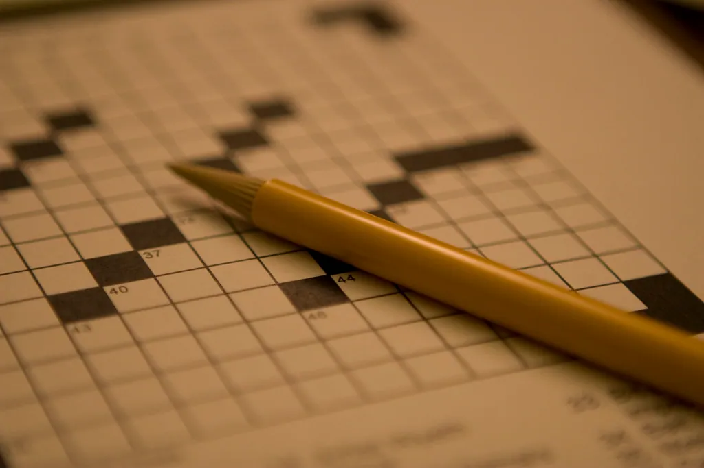

The Front Page
Welcome to the Sunday Pencil Club
Pull up a chair. There is a fresh crossword waiting, a word search or two, a stack of trivia, and a brain teaser to chew on with your morning cup. Everything here is original, everything is free, and nothing is in a hurry — which, we think, is exactly how a puzzle page ought to be.

Across & Down
The Mini Crosswords
Three original seven-by-seven grids, gentle enough for a coffee break and clever enough to be satisfying. Type your answers right on the screen, check your work, or reveal the solution if a corner has you stumped. Print them out if you prefer pencil on paper.
New to crosswords, or returning after years away? Our plain-English guide to solving starts you off with the little tricks every seasoned solver knows, so there is no need to feel rusty for long.
Hidden Words
Themed Word Searches
American places, the garden, and the kitchen — three themed grids with words tucked across, down, and on the diagonal. Click the first and last letter of each word you spot, and watch it light up.
They are wonderful for a relaxed afternoon, and every one can be printed for the road, the porch, or a long wait at the doctor's office.
Test Yourself
Trivia & the Daily Quiz
Five themed trivia rounds — geography, Americana, nature, history, and everyday know-how — plus a fresh ten-question Daily Quiz that changes with the date. No sign-up, no score to beat but your own.
And when you fancy a proper head-scratcher, our Brain Teasers page is full of riddles and logic puzzles with the answers tucked just out of sight.
A word from the editor
There is a particular pleasure in a puzzle that asks nothing of you but your attention. No points, no clock, no leaderboard — just you, a clue, and the quiet click of the answer falling into place. The Sunday Pencil Club exists for that pleasure and no other. We are not here to sell you anything, to sign you up for anything, or to measure you against anyone. We are here to set a good puzzle and let you enjoy it.
Everything on these pages is made by hand. The crosswords are built one square at a time, with ordinary words and friendly clues, because a puzzle should be a pleasant challenge and not a cruel one. The trivia is drawn from the sort of facts a well-read person collects over a lifetime, and we check each answer before it goes in. The word searches and teasers are ours too, dreamed up for the simple joy of hiding a word or bending a riddle.
We have the older solver especially in mind. The type is large and can be made larger still with the buttons at the top of every page. The grids are roomy, the clues are clear, and anything you can solve on the screen you can also print and solve with a pencil in your favorite chair. If a feature ever gets in your way rather than out of it, we would like to hear about it.
So make yourself comfortable. Start with whichever page catches your eye — there is no right order and no wrong one. And if a grid defeats you today, leave it; it will keep, and tomorrow it may look easier. That, after all, is half the fun.
And if you are new to all this, or coming back after a long time away, let us set your mind at ease: there is no level you need to be at to belong here. Every page carries a plain guide, every puzzle can be checked or revealed if you wish, and nobody is watching over your shoulder or keeping a score. Start gently, go at your own pace, and let the pleasure find you. That, in the end, is the only membership the Club has ever asked for.
Why we keep a pencil sharp
People have folded themselves into puzzles for as long as there have been quiet afternoons to fill. A crossword is a small, winnable argument with yourself. A word search is a gentle hunt with a guaranteed happy ending. A good riddle is a joke that makes you feel clever when you finally get it. None of it needs a screen, a subscription, or a single thing beyond a little time and a willingness to be pleasantly puzzled.
We think there is something quietly worthwhile in keeping that habit, whatever your age. A puzzle asks you to notice, to guess, to try again — the same friendly muscles you use to remember a name, follow a recipe, or plan a trip. We make no grand claims about it; we simply find, as perhaps you do, that a day with a puzzle in it is a slightly better day. A finished grid is a small, honest accomplishment in a world that does not hand out many, and there is no age at which that stops being true.
Making yourself at home
A few small comforts are built into every page here. At the very top you will find a Text size control with three buttons — A, A+, and A++ — that make every word on the site larger, and your choice is remembered on your own device until you change it. Each puzzle page carries a Print button, so a grid you fancy solving in your armchair can be on paper in a moment, clean and clear in black and white.
You will also notice there is no clutter in your way: no advertisements flashing beside the clues, no box asking you to sign up, no timer counting down. We have kept the pages deliberately plain and calm, because a puzzle deserves your full, unhurried attention, and so do you. Pull up that chair whenever you like. The Club is always open, and the pencils are always sharp.